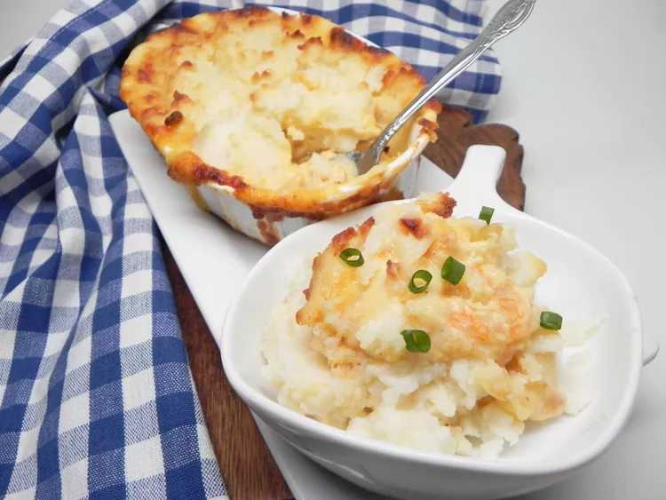

Fish Pie

Easy Fish Pie
This fish pie is good enough for a dinner party and the kids love it too. Living by the sea, we try to eat fish often, and this hearty meal is an easy way to enjoy a little bit of what you fancy! Serve with a green salad or a green steamed vegetable like broccoli.
Ingredients
- 6 medium potatoes
- ½ cup butter, divided
- 1 medium white Spanish onion, chopped
- 1 ½ cups grated medium Cheddar cheese
- 1 ¼ cups light cream, or as needed
- 2 teaspoons Dijon mustard
- 1 teaspoon lemon juice
- Salt and ground black pepper to taste
- 1 ½ pounds white fish - skinned, boned, and cut into chunks
- ½ pound fresh shrimp, peeled and deveined
- salt and ground black pepper to taste
Steps
- Preheat the oven to 400 degrees F (200 degrees C). Cut a small slit in each potato and place onto a baking sheet.
- Bake in the preheated oven until potatoes are easily pierced with a fork, about 1 hour and 10 minutes.
- When the potatoes are almost finished, melt 1/4 cup butter in a skillet over medium heat. Add onion; cook and stir until softened and translucent, about 5 minutes. Mix in Cheddar, cream, mustard, and lemon juice; season with salt and pepper. Cook, stirring frequently, until sauce is warm and Cheddar has melted, 3 to 5 minutes. Remove from the heat.
- Place white fish and shrimp into a 3 1/2-quart oven-proof baking dish. Pour cheese sauce over fish and stir until well combined.
- Scoop flesh out of baked potatoes and place into a large bowl; discard the skins. Add remaining 1/4 cup butter; season with salt and pepper. Mash with a fork until butter has melted and potatoes are smooth. Spread mashed potatoes evenly over fish.
- Return to the oven and bake until sauce is bubbling and potato topping is golden brown, about 55 minutes.